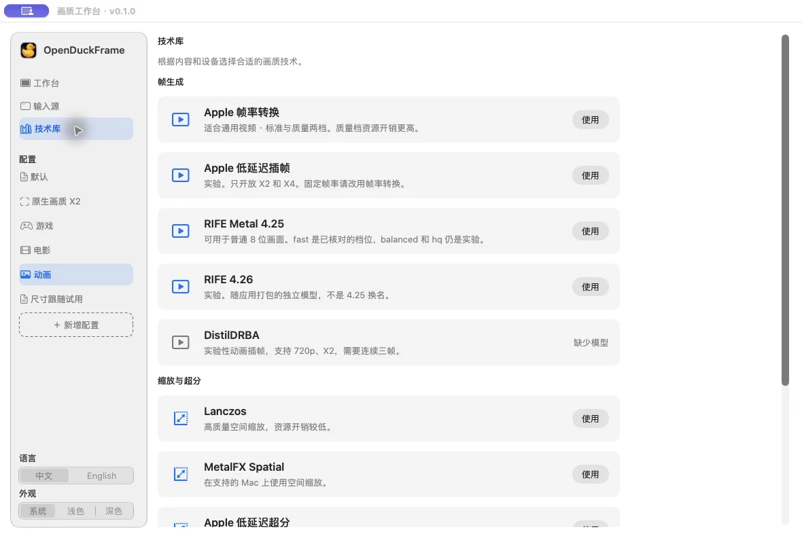
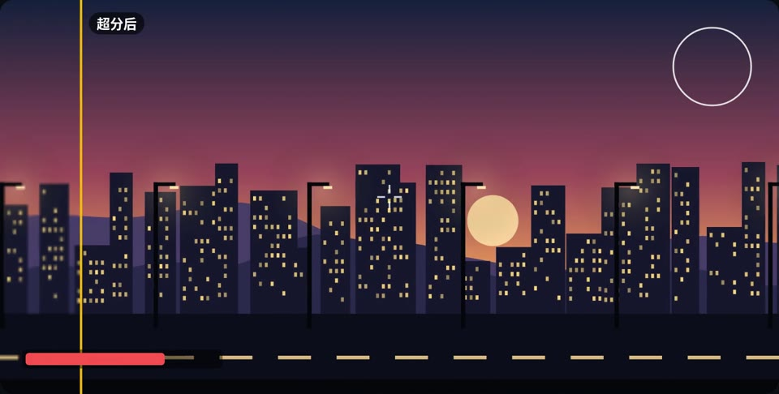
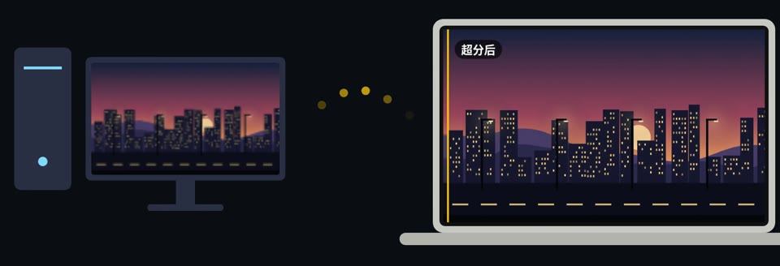
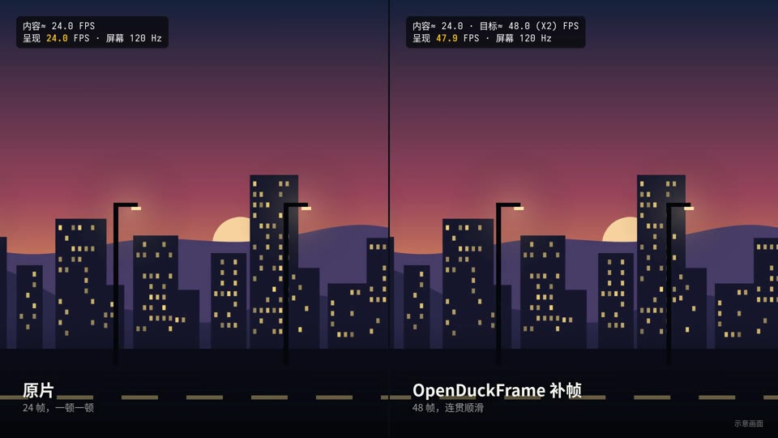

24 → 48 fps
网页视频
浏览器里的视频网站，普通窗口或网页全屏都行。
OpenDuckFrame（开源小鸭）是一款免费开源的 Mac 实时补帧与超分应用。选一个窗口、显示器或本地视频，让画面更流畅、更清晰，全部在本机处理。
↓ OpenDuckFrame.dmg · macOS 14+ · Apple 芯片
$ git clone https://github.com/Jun-bao/OpenDuckFrame
免费 · 开源（MIT）· 不用注册账号
OpenDuckFrame（开源小鸭）是一款原生 Mac 画质增强应用。它识别来源画面的帧率，用 RIFE 或 Apple 插帧补出中间帧，也能独立配置超分。窗口、显示器与本地视频都可以作为输入，画面不上传。
读使用指南 →只数画面真正变化的帧，24 帧的视频按 24 帧算，不会被 120 Hz 刷新率骗到。
选择目标帧率，或请求 2 倍、3 倍、4 倍补帧。实际输出取决于引擎、画面分辨率和显示器刷新率。
用 Lanczos、MetalFX 等方案实时放大低分辨率画面。超分与补帧可以分别配置，清晰度和开销随方案而变。
跟不上时自动退到更低倍率，不让画面忽快忽慢。
内容乘倍率超过屏幕刷新率时直接显示原画，不让显卡白忙。
角落的小面板实时显示内容帧率、输出帧率和当前倍率。
采集和模型都在你的 Mac 上运行，不需要账号，画面不出这台电脑。
技术库列出每种补帧和超分方案适合什么画面、开销多大。选一个配置，点“使用”就行。

窗口里在动的画面都能选。这几种最常用。
浏览器里的视频网站，普通窗口或网页全屏都行。
播放器里的电影和剧集，镜头平移不再一顿一顿。
帧数低的动画，动作更连贯。

1080p → 1440p用较低分辨率跑游戏换帧率，再实时放大到屏幕分辨率。

PC → Mac把 Windows 电脑上的游戏串流到 Mac，在 Mac 上超分，画面更清晰。

720p → 1440p老电影、低码率视频，放大到屏幕分辨率再看。
图片与帧率数值为示意，实际效果和输出帧率随设备、引擎与来源而变。
还有别的问题？ 到 GitHub 交流
OpenDuckFrame（开源小鸭）是一款免费、MIT 开源的 Mac 实时补帧与超分应用。它增强已有的窗口、显示器或本地视频画面，提供 RIFE 与 Apple 插帧，以及独立的画面缩放和本地视频播放功能。
支持 Apple 芯片的 Mac，要求 macOS 14 或更高版本。Apple 插帧等部分引擎需要 macOS 26 及受支持的硬件与输入格式。目前不支持 Intel Mac、Windows、iPhone 或 iPad。
会。补帧需要根据已有帧计算中间画面，延迟会随引擎、分辨率和质量设置变化。建议先从 2 倍补帧开始，使用原画、增强和对比视图检查效果；对操作延迟敏感时应谨慎选择。
目前支持普通窗口和网页全屏。macOS 原生全屏还在开发中。
不会。采集、识别和补帧都在你的 Mac 上完成，也不需要账号。
免费。源代码以 MIT 许可公开在 GitHub 上。
当前社区版未经过 Apple 公证。确认信任下载来源后，可在“系统设置 → 隐私与安全性”中查看拦截提示，自行决定是否允许打开。应用不会替你修改系统安全设置。
下载安装后，打开“文件 → 画质工作台”，选择窗口、显示器或本地视频，先尝试 2 倍补帧，再点“开始增强”。采集窗口或显示器需要屏幕录制权限；本地视频播放不需要这项权限。
倍率是请求的处理模式，不能保证实际显示帧率。引擎、来源帧率、分辨率和显示器刷新率都会影响结果；60 Hz 显示器也无法显示每秒 120 张不同画面。请以帧率面板和实际观看结果为准。
补帧在相邻画面之间生成中间帧，改善运动连贯性；超分把画面放大到更高分辨率。两项功能可分别启用，处理结果可能出现伪影或细节变化，建议在相同输出尺寸下比较。
从来源选择、引擎设置到实际帧率，先看适合自己的用法。
兼容要求、窗口与本地文件的使用步骤，以及为什么选择 4 倍不一定达到 120 fps。
一个处理运动连贯性，一个处理画面尺寸。了解何时单独使用，何时一起开启。